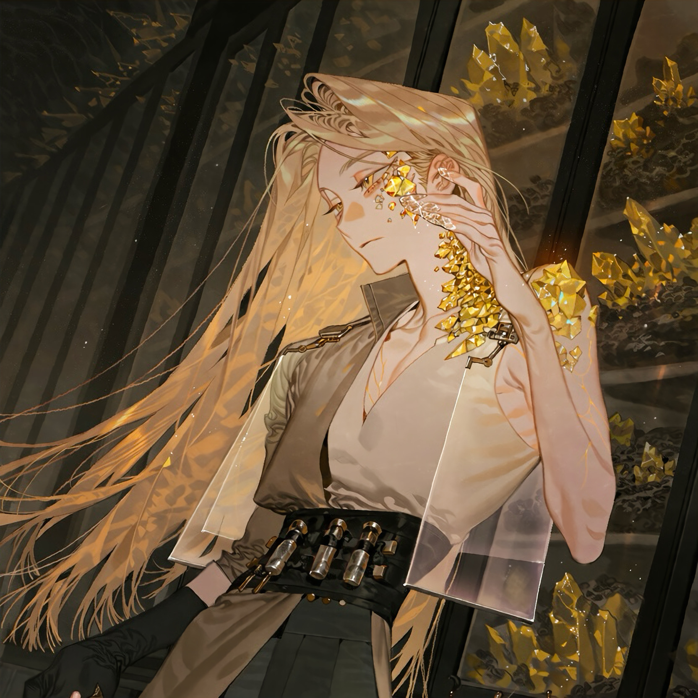

CHARACTER RECORD / 017STATUS: AVAILABLE

✦IMAGE
NOT FOUND
NOT FOUND
ヴェスパー
✦ WITH OUTFIT
服装込み
PROMPT DATATXT / 017
masterpiece, best quality, ultra detailed, absurdres, boy, solo, adult male, mineral humanoid,
1.5::slender delicate physique, long limbs, narrow shoulders, narrow waist, elegant elongated silhouette, fine-boned hands::,
1.5::long hair, waist-length straight hair, layered silky strands, uneven face-framing locks, loose hair flowing behind the shoulders::,
honey blonde outer hair, pale champagne gold highlights, deep amber undertones, translucent golden strands near the ends, fine individual hair strands,
1.7::facial skin partially transformed into faceted yellow gemstones, translucent citrine crystals growing from one temple across the cheekbone and down the side of the neck, irregular mineral formations embedded seamlessly into the skin::,
1.5::golden yellow crystal growths along one collarbone and shoulder, translucent quartz-like fingertips, amber mineral veins visible beneath translucent skin::,
asymmetrical crystal distribution, natural geological fractures, sharply faceted surfaces, internal golden inclusions, subtle optical refraction, tiny trapped air bubbles, polished edges contrasting with rough raw crystal surfaces,
thin delicate eyebrows, narrow eyes, pale golden irises, faint amber limbal rings, long eyelashes, narrow nose, delicate jawline, slightly tired expression, pale warm ivory skin, small golden mineral fragments beneath one eye,
1.5::original citrine mineral character design, organic gemstone metamorphosis, refined geological aesthetic::,
long asymmetrical sleeveless coat in muted ochre and charcoal, high folded collar protecting the crystal-covered neck, fitted ivory inner shirt with an open asymmetric neckline exposing the crystalline collarbone, narrow black waist harness with small specimen vials, fine gold clasps, delicate chain fasteners, asymmetrical split coat tails, fitted charcoal trousers, narrow leather boots, fingerless gloves on the unaffected hand, one crystal-exposing arm left uncovered, small raw citrine specimens secured in metal settings, thin brass filigree following the natural crystal veins, restrained geometric stitching inspired by mineral cleavage planes, translucent amber fabric inserts, brushed antique gold hardware, matte charcoal wool, soft ivory silk, worn leather, realistic mineral refraction, intricate functional construction, warm yellow, citrine gold, honey amber, pale ivory, muted ochre and charcoal black,